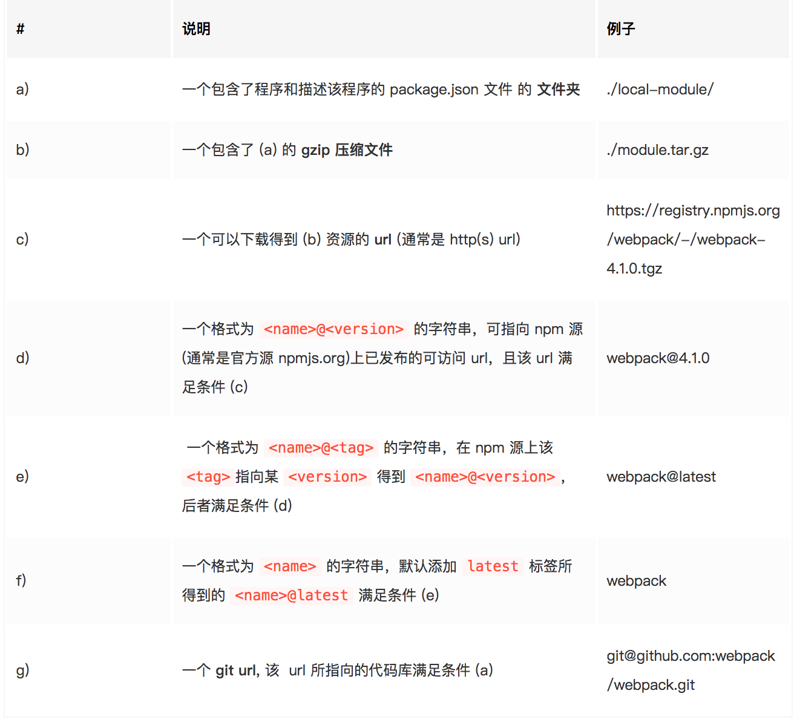

<!DOCTYPE html>


  


<html class="theme-next muse use-motion" lang="zh-Hans">
<head>
  <meta charset="UTF-8"/>
<meta http-equiv="X-UA-Compatible" content="IE=edge" />
<meta name="viewport" content="width=device-width, initial-scale=1, maximum-scale=1"/>
<meta name="theme-color" content="#222">


<meta http-equiv="Cache-Control" content="no-transform" />
<meta http-equiv="Cache-Control" content="no-siteapp" />


  
  
  <link href="/MyBlog/lib/fancybox/source/jquery.fancybox.css?v=2.1.5" rel="stylesheet" type="text/css" />


<link href="/MyBlog/lib/font-awesome/css/font-awesome.min.css?v=4.6.2" rel="stylesheet" type="text/css" />

<link href="/MyBlog/css/main.css?v=5.1.4" rel="stylesheet" type="text/css" />


  <link rel="apple-touch-icon" sizes="180x180" href="/MyBlog/images/apple-touch-icon-next.png?v=5.1.4">


  <link rel="icon" type="image/png" sizes="32x32" href="/MyBlog/images/favicon-32x32-next.png?v=5.1.4">


  <link rel="icon" type="image/png" sizes="16x16" href="/MyBlog/images/favicon-16x16-next.png?v=5.1.4">


  <link rel="mask-icon" href="/MyBlog/images/logo.svg?v=5.1.4" color="#222">


  <meta name="keywords" content="npm," />


  <link rel="alternate" href="/MyBlog/atom.xml" title="个人博客" type="application/atom+xml" />


<meta name="description" content="参考文档npm install npm init npm init 执行默认行为免去npm init 之后一直按 enter，在命令后追加 –yes 参数即可，其作用与一路下一步相同。 1npm init --yes  自定义 npm init 行为npm init 命令的原理并不复杂，调用脚本，输出一个初始化的 package.json 文件就是了。所以相应地，定制 npm init 命令的实">
<meta name="keywords" content="npm">
<meta property="og:type" content="article">
<meta property="og:title" content="npm知识">
<meta property="og:url" content="https://qiuyuxiu.github.io/MyBlog/2018/12/15/npm知识/index.html">
<meta property="og:site_name" content="个人博客">
<meta property="og:description" content="参考文档npm install npm init npm init 执行默认行为免去npm init 之后一直按 enter，在命令后追加 –yes 参数即可，其作用与一路下一步相同。 1npm init --yes  自定义 npm init 行为npm init 命令的原理并不复杂，调用脚本，输出一个初始化的 package.json 文件就是了。所以相应地，定制 npm init 命令的实">
<meta property="og:locale" content="zh-Hans">
<meta property="og:image" content="https://qiuyuxiu.github.io/MyBlog/images/npm1.png">
<meta property="og:updated_time" content="2018-12-15T07:53:28.000Z">
<meta name="twitter:card" content="summary">
<meta name="twitter:title" content="npm知识">
<meta name="twitter:description" content="参考文档npm install npm init npm init 执行默认行为免去npm init 之后一直按 enter，在命令后追加 –yes 参数即可，其作用与一路下一步相同。 1npm init --yes  自定义 npm init 行为npm init 命令的原理并不复杂，调用脚本，输出一个初始化的 package.json 文件就是了。所以相应地，定制 npm init 命令的实">
<meta name="twitter:image" content="https://qiuyuxiu.github.io/MyBlog/images/npm1.png">


<script type="text/javascript" id="hexo.configurations">
  var NexT = window.NexT || {};
  var CONFIG = {
    root: '/MyBlog/',
    scheme: 'Muse',
    version: '5.1.4',
    sidebar: {"position":"left","display":"post","offset":12,"b2t":false,"scrollpercent":false,"onmobile":false},
    fancybox: true,
    tabs: true,
    motion: {"enable":true,"async":false,"transition":{"post_block":"fadeIn","post_header":"slideDownIn","post_body":"slideDownIn","coll_header":"slideLeftIn","sidebar":"slideUpIn"}},
    duoshuo: {
      userId: '0',
      author: '博主'
    },
    algolia: {
      applicationID: '',
      apiKey: '',
      indexName: '',
      hits: {"per_page":10},
      labels: {"input_placeholder":"Search for Posts","hits_empty":"We didn't find any results for the search: ${query}","hits_stats":"${hits} results found in ${time} ms"}
    }
  };
</script>


  <link rel="canonical" href="https://qiuyuxiu.github.io/MyBlog/2018/12/15/npm知识/"/>


  <title>npm知识 | 个人博客</title>
  


</head>

<body itemscope itemtype="http://schema.org/WebPage" lang="zh-Hans">

  
  
    
  

  <div class="container sidebar-position-left page-post-detail">
    <div class="headband"></div>

    <header id="header" class="header" itemscope itemtype="http://schema.org/WPHeader">
      <div class="header-inner"><div class="site-brand-wrapper">
  <div class="site-meta ">
    

    <div class="custom-logo-site-title">
      <a href="/MyBlog/"  class="brand" rel="start">
        <span class="logo-line-before"><i></i></span>
        <span class="site-title">个人博客</span>
        <span class="logo-line-after"><i></i></span>
      </a>
    </div>
      
        <p class="site-subtitle">有关于前端学习的个人博客</p>
      
  </div>

  <div class="site-nav-toggle">
    <button>
      <span class="btn-bar"></span>
      <span class="btn-bar"></span>
      <span class="btn-bar"></span>
    </button>
  </div>
</div>

<nav class="site-nav">
  

  
    <ul id="menu" class="menu">
      
        
        <li class="menu-item menu-item-home">
          <a href="/MyBlog/" rel="section">
            
              <i class="menu-item-icon fa fa-fw fa-home"></i> <br />
            
            首页
          </a>
        </li>
      
        
        <li class="menu-item menu-item-tags">
          <a href="/MyBlog/tags/" rel="section">
            
              <i class="menu-item-icon fa fa-fw fa-tags"></i> <br />
            
            标签
          </a>
        </li>
      
        
        <li class="menu-item menu-item-categories">
          <a href="/MyBlog/categories/" rel="section">
            
              <i class="menu-item-icon fa fa-fw fa-th"></i> <br />
            
            分类
          </a>
        </li>
      
        
        <li class="menu-item menu-item-archives">
          <a href="/MyBlog/archives/" rel="section">
            
              <i class="menu-item-icon fa fa-fw fa-archive"></i> <br />
            
            归档
          </a>
        </li>
      

      
    </ul>
  

  
</nav>


 </div>
    </header>

    <main id="main" class="main">
      <div class="main-inner">
        <div class="content-wrap">
          <div id="content" class="content">
            

  <div id="posts" class="posts-expand">
    

  

  
  
  

  <article class="post post-type-normal" itemscope itemtype="http://schema.org/Article">
  
  
  
  <div class="post-block">
    <link itemprop="mainEntityOfPage" href="https://qiuyuxiu.github.io/MyBlog/MyBlog/2018/12/15/npm知识/">

    <span hidden itemprop="author" itemscope itemtype="http://schema.org/Person">
      <meta itemprop="name" content="Daisy">
      <meta itemprop="description" content="">
      <meta itemprop="image" content="/MyBlog/images/avatar.gif">
    </span>

    <span hidden itemprop="publisher" itemscope itemtype="http://schema.org/Organization">
      <meta itemprop="name" content="个人博客">
    </span>

    
      <header class="post-header">

        
        
          <h1 class="post-title" itemprop="name headline">npm知识</h1>
        

        <div class="post-meta">
          <span class="post-time">
            
              <span class="post-meta-item-icon">
                <i class="fa fa-calendar-o"></i>
              </span>
              
                <span class="post-meta-item-text">发表于</span>
              
              <time title="创建于" itemprop="dateCreated datePublished" datetime="2018-12-15T15:02:54+08:00">
                2018-12-15
              </time>
            

            

            
          </span>

          
            <span class="post-category" >
            
              <span class="post-meta-divider">|</span>
            
              <span class="post-meta-item-icon">
                <i class="fa fa-folder-o"></i>
              </span>
              
                <span class="post-meta-item-text">分类于</span>
              
              
                <span itemprop="about" itemscope itemtype="http://schema.org/Thing">
                  <a href="/MyBlog/categories/前端/" itemprop="url" rel="index">
                    <span itemprop="name">前端</span>
                  </a>
                </span>

                
                
              
            </span>
          

          
            
          

          
          

          

          

          

        </div>
      </header>
    

    
    
    
    <div class="post-body" itemprop="articleBody">

      
      

      
        <p>参考文档<a href="https://juejin.im/post/5ab3f77df265da2392364341" target="_blank" rel="noopener">npm install</a></p>
<h2 id="npm-init"><a href="#npm-init" class="headerlink" title="npm init"></a>npm init</h2><ul>
<li><p>npm init 执行默认行为<br>免去npm init 之后一直按 enter，在命令后追加 –yes 参数即可，其作用与一路下一步相同。</p>
<figure class="highlight plain"><table><tr><td class="gutter"><pre><span class="line">1</span><br></pre></td><td class="code"><pre><span class="line">npm init --yes</span><br></pre></td></tr></table></figure>
</li>
<li><p>自定义 npm init 行为<br>npm init 命令的原理并不复杂，调用脚本，输出一个初始化的 package.json 文件就是了。所以相应地，定制 npm init 命令的实现方式也很简单，在 Home 目录创建一个 .npm-init.js 即可，该文件的 module.exports 即为 package.json 配置内容，需要获取用户输入时候，使用 prompt() 方法即可。</p>
<figure class="highlight plain"><table><tr><td class="gutter"><pre><span class="line">1</span><br><span class="line">2</span><br><span class="line">3</span><br><span class="line">4</span><br><span class="line">5</span><br><span class="line">6</span><br><span class="line">7</span><br><span class="line">8</span><br><span class="line">9</span><br><span class="line">10</span><br><span class="line">11</span><br><span class="line">12</span><br><span class="line">13</span><br><span class="line">14</span><br><span class="line">15</span><br></pre></td><td class="code"><pre><span class="line">const desc = prompt(&apos;description?&apos;, &apos;A new package...&apos;)</span><br><span class="line">const bar = prompt(&apos;bar?&apos;, &apos;&apos;)</span><br><span class="line">const count = prompt(&apos;count?&apos;, &apos;42&apos;)</span><br><span class="line"></span><br><span class="line">module.exports = &#123;</span><br><span class="line">  key: &apos;value&apos;,</span><br><span class="line">  foo: &#123;</span><br><span class="line">    bar: bar,</span><br><span class="line">    count: count</span><br><span class="line">  &#125;,</span><br><span class="line">  name: prompt(&apos;name?&apos;, process.cwd().split(&apos;/&apos;).pop()),</span><br><span class="line">  version: prompt(&apos;version?&apos;, &apos;0.1.0&apos;),</span><br><span class="line">  description: desc,</span><br><span class="line">  main: &apos;index.js&apos;,</span><br><span class="line">&#125;</span><br></pre></td></tr></table></figure>
<p>  此时在 ~/hello 目录下执行 npm init 将会得到这样的 package.json:</p>
  <figure class="highlight plain"><table><tr><td class="gutter"><pre><span class="line">1</span><br><span class="line">2</span><br><span class="line">3</span><br><span class="line">4</span><br><span class="line">5</span><br><span class="line">6</span><br><span class="line">7</span><br><span class="line">8</span><br><span class="line">9</span><br><span class="line">10</span><br><span class="line">11</span><br></pre></td><td class="code"><pre><span class="line">&#123;</span><br><span class="line">&quot;key&quot;: &quot;value&quot;,</span><br><span class="line">&quot;foo&quot;: &#123;</span><br><span class="line">    &quot;bar&quot;: &quot;&quot;,</span><br><span class="line">    &quot;count&quot;: &quot;42&quot;</span><br><span class="line">&#125;,</span><br><span class="line">&quot;name&quot;: &quot;hello&quot;,</span><br><span class="line">&quot;version&quot;: &quot;0.1.0&quot;,</span><br><span class="line">&quot;description&quot;: &quot;A new package...&quot;,</span><br><span class="line">&quot;main&quot;: &quot;index.js&quot;</span><br><span class="line">&#125;</span><br></pre></td></tr></table></figure>
</li>
</ul>
<h2 id="依赖包安装"><a href="#依赖包安装" class="headerlink" title="依赖包安装"></a>依赖包安装</h2><ul>
<li>package定义</li>
</ul>
<p>手动安装一个包时，执行 <code>npm install &lt;package&gt;</code> 命令即可。这里的第三个参数 package 通常就是我们所要安装的包名，默认配置下 npm 会从默认的源 (Registry) 中查找该包名对应的包地址，并下载安装。但在 npm 的世界里，除了简单的指定包名, package 还可以是一个指向有效包名的 http url/git url/文件夹路径。</p>
<p>根据<a href="https://docs.npmjs.com/about-packages-and-modules" target="_blank" rel="noopener">npm文档</a>，只要符合以下其中之一条件，就是一个 package:<br>   </p>
<ul>
<li>npm5</li>
</ul>
<ol>
<li>npm5增加了 package-lock.json 文件，package-lock.json 的作用是锁定依赖安装结构，如果查看这个 json 的结构，会发现与 node_modules 目录的文件层级结构是一一对应的。       </li>
<li>version, resolved, integrity 用来记录包的准确版本号、内容hash、安装源的，决定了要安装的包的准确“身份”信息。假设盖住其他字段，只关注文件中的 dependencies: {} 我们会发现，整个文件的 JSON 配置里的 dependencies 层次结构与文件系统中 node_modules 的文件夹层次结构是完全对照的。  </li>
<li>只关注 requires: {} 字段又会发现，除最外层的 requires 属性为 true 以外, 其他层的 requires 属性都对应着这个包的 package.json 里记录的自己的依赖项。  </li>
<li>因为这个文件记录了 node_modules 里所有包的结构、层级和版本号甚至安装源，它也就事实上提供了 “保存” node_modules 状态的能力。只要有这样一个 lock 文件，不管在那一台机器上执行 npm install 都会得到完全相同的 node_modules 结果。  </li>
<li>这就是 package-lock 文件致力于优化的场景：在从前仅仅用 package.json 记录依赖，由于 semver range 的机制；一个月前由 A 生成的 package.json 文件，B 在一个月后根据它执行 npm install 所得到的 node_modules 结果很可能许多包都存在不同的差异，虽然 semver 机制的限制使得同一份 package.json 不会得到大版本不同的依赖包，但同一份代码在不同环境安装出不同的依赖包，依然是可能导致意外的潜在因素。</li>
</ol>
<p>禁用package-lock.json：<br><figure class="highlight plain"><table><tr><td class="gutter"><pre><span class="line">1</span><br></pre></td><td class="code"><pre><span class="line">npm config set package-lock false</span><br></pre></td></tr></table></figure></p>
<h2 id="依赖包版本管理"><a href="#依赖包版本管理" class="headerlink" title="依赖包版本管理"></a>依赖包版本管理</h2><p>见 npm依赖包版本管理文章</p>

      
    </div>
    
    
    

    

    

    

    <footer class="post-footer">
      
        <div class="post-tags">
          
            <a href="/MyBlog/tags/npm/" rel="tag"># npm</a>
          
        </div>
      

      
      
      

      
        <div class="post-nav">
          <div class="post-nav-next post-nav-item">
            
              <a href="/MyBlog/2018/12/15/export与export-default/" rel="next" title="export与export default">
                <i class="fa fa-chevron-left"></i> export与export default
              </a>
            
          </div>

          <span class="post-nav-divider"></span>

          <div class="post-nav-prev post-nav-item">
            
              <a href="/MyBlog/2018/12/15/npm依赖包版本管理/" rel="prev" title="npm依赖包版本管理">
                npm依赖包版本管理 <i class="fa fa-chevron-right"></i>
              </a>
            
          </div>
        </div>
      

      
      
    </footer>
  </div>
  
  
  
  </article>


    <div class="post-spread">
      
    </div>
  </div>


          </div>
          


          

  


        </div>
        
          
  
  <div class="sidebar-toggle">
    <div class="sidebar-toggle-line-wrap">
      <span class="sidebar-toggle-line sidebar-toggle-line-first"></span>
      <span class="sidebar-toggle-line sidebar-toggle-line-middle"></span>
      <span class="sidebar-toggle-line sidebar-toggle-line-last"></span>
    </div>
  </div>

  <aside id="sidebar" class="sidebar">
    
    <div class="sidebar-inner">

      

      
        <ul class="sidebar-nav motion-element">
          <li class="sidebar-nav-toc sidebar-nav-active" data-target="post-toc-wrap">
            文章目录
          </li>
          <li class="sidebar-nav-overview" data-target="site-overview-wrap">
            站点概览
          </li>
        </ul>
      

      <section class="site-overview-wrap sidebar-panel">
        <div class="site-overview">
          <div class="site-author motion-element" itemprop="author" itemscope itemtype="http://schema.org/Person">
            
              <p class="site-author-name" itemprop="name">Daisy</p>
              <p class="site-description motion-element" itemprop="description">前端技术个人博客</p>
          </div>

          <nav class="site-state motion-element">

            
              <div class="site-state-item site-state-posts">
              
                <a href="/MyBlog/archives/">
              
                  <span class="site-state-item-count">49</span>
                  <span class="site-state-item-name">日志</span>
                </a>
              </div>
            

            
              
              
              <div class="site-state-item site-state-categories">
                <a href="/MyBlog/categories/index.html">
                  <span class="site-state-item-count">26</span>
                  <span class="site-state-item-name">分类</span>
                </a>
              </div>
            

            
              
              
              <div class="site-state-item site-state-tags">
                <a href="/MyBlog/tags/index.html">
                  <span class="site-state-item-count">51</span>
                  <span class="site-state-item-name">标签</span>
                </a>
              </div>
            

          </nav>

          
            <div class="feed-link motion-element">
              <a href="/MyBlog/atom.xml" rel="alternate">
                <i class="fa fa-rss"></i>
                RSS
              </a>
            </div>
          

          

          
          

          
          

          

        </div>
      </section>

      
      <!--noindex-->
        <section class="post-toc-wrap motion-element sidebar-panel sidebar-panel-active">
          <div class="post-toc">

            
              
            

            
              <div class="post-toc-content"><ol class="nav"><li class="nav-item nav-level-2"><a class="nav-link" href="#npm-init"><span class="nav-number">1.</span> <span class="nav-text">npm init</span></a></li><li class="nav-item nav-level-2"><a class="nav-link" href="#依赖包安装"><span class="nav-number">2.</span> <span class="nav-text">依赖包安装</span></a></li><li class="nav-item nav-level-2"><a class="nav-link" href="#依赖包版本管理"><span class="nav-number">3.</span> <span class="nav-text">依赖包版本管理</span></a></li></ol></div>
            

          </div>
        </section>
      <!--/noindex-->
      

      

    </div>
  </aside>


        
      </div>
    </main>

    <footer id="footer" class="footer">
      <div class="footer-inner">
        <div class="copyright">&copy; 2017 &mdash; <span itemprop="copyrightYear">2020</span>
  <span class="with-love">
    <i class="fa fa-user"></i>
  </span>
  <span class="author" itemprop="copyrightHolder">Daisy</span>

  
</div>


        


        
      </div>
    </footer>

    
      <div class="back-to-top">
        <i class="fa fa-arrow-up"></i>
        
      </div>
    

    

  </div>

  

<script type="text/javascript">
  if (Object.prototype.toString.call(window.Promise) !== '[object Function]') {
    window.Promise = null;
  }
</script>


  


  
  
    <script type="text/javascript" src="/MyBlog/lib/jquery/index.js?v=2.1.3"></script>
  

  
  
    <script type="text/javascript" src="/MyBlog/lib/fastclick/lib/fastclick.min.js?v=1.0.6"></script>
  

  
  
    <script type="text/javascript" src="/MyBlog/lib/jquery_lazyload/jquery.lazyload.js?v=1.9.7"></script>
  

  
  
    <script type="text/javascript" src="/MyBlog/lib/velocity/velocity.min.js?v=1.2.1"></script>
  

  
  
    <script type="text/javascript" src="/MyBlog/lib/velocity/velocity.ui.min.js?v=1.2.1"></script>
  

  
  
    <script type="text/javascript" src="/MyBlog/lib/fancybox/source/jquery.fancybox.pack.js?v=2.1.5"></script>
  


  


  <script type="text/javascript" src="/MyBlog/js/src/utils.js?v=5.1.4"></script>

  <script type="text/javascript" src="/MyBlog/js/src/motion.js?v=5.1.4"></script>


  
  

  
  <script type="text/javascript" src="/MyBlog/js/src/scrollspy.js?v=5.1.4"></script>
<script type="text/javascript" src="/MyBlog/js/src/post-details.js?v=5.1.4"></script>


  


  <script type="text/javascript" src="/MyBlog/js/src/bootstrap.js?v=5.1.4"></script>


  


  


	


  


  


  


  

  

  

  
  

  

  

  

</body>
</html>
